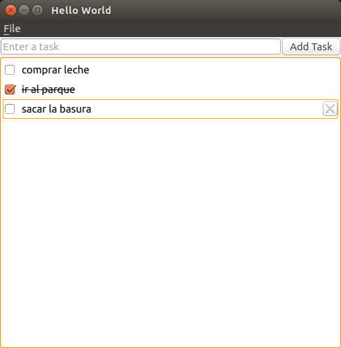

Ejercicio 2
TODO con QWidgets
Entrega
- La finalidad es que os “manchéis las manos” con:
- QML y QtQuick
- La documentación de Qt
- 1 Semana
- El próximo antes de la clase. Revisamos todos en clase
- juan.morales@live.u-tad.com
- Cuanta más funcionalidad más nota
- 20% de la nota final de la asignatura
Pasos sugeridos
- Diseñar la interfaz como en la imágen
- Utilizar los QtQuick Controls y Layouts
- ApplicationWindow
- Button
- ColumnLayout y RowLayout
- TextField
- ListView
- Conectar la señar triggered de la acción del menú Quit:
- El javascript es: Qt.quit()
Pasos sugeridos
- Reaccionar a la señal onClicked del botón:
- Añadir el texto de la línea de entrada a la lista de tareas
- Borrar tareas de la lista:
- Reaccionar a Keys.onDeletedPressed
- Crear un delegado para el ListView en otro fichero qml
- Llamarlo Task.qml
- En el ListView se utilizaría con: “delegate: Task{}”
- El Task contiene los Checkbox, TextInput y un Botón
¿Qué mejorarías?
- Añadir alguna transición cuando:
- se añaden items
- se eliminan items
- se tachan items
- Recuperarnos de los errores
- Undo/Redo al eliminar una tarea
- Todas las tareas son editables
- Barra general de progreso de las tareas anotadas Vs completadas
- Darle aspecto de libreta, con imágenes de fondo y sin los widgets de QtQuick Controls